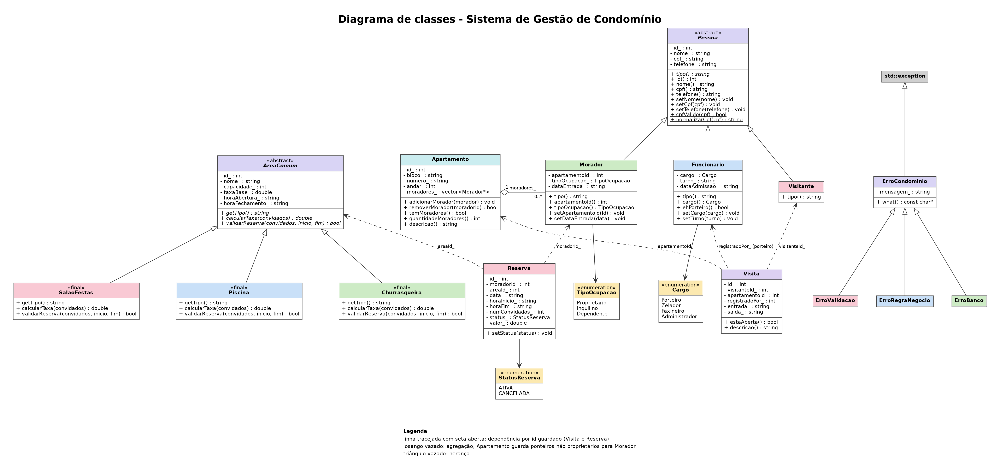
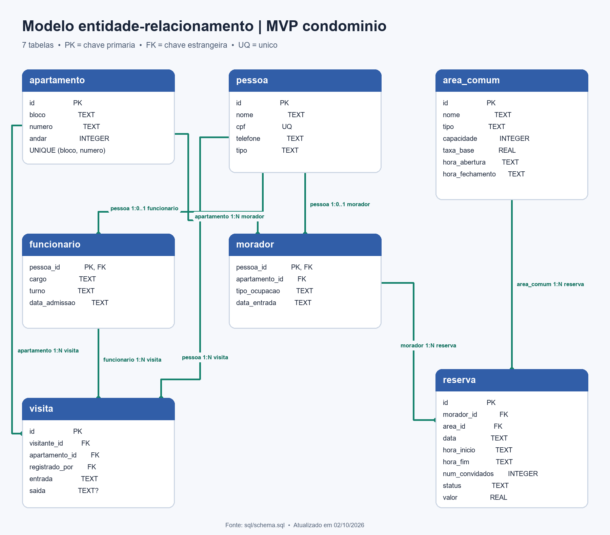
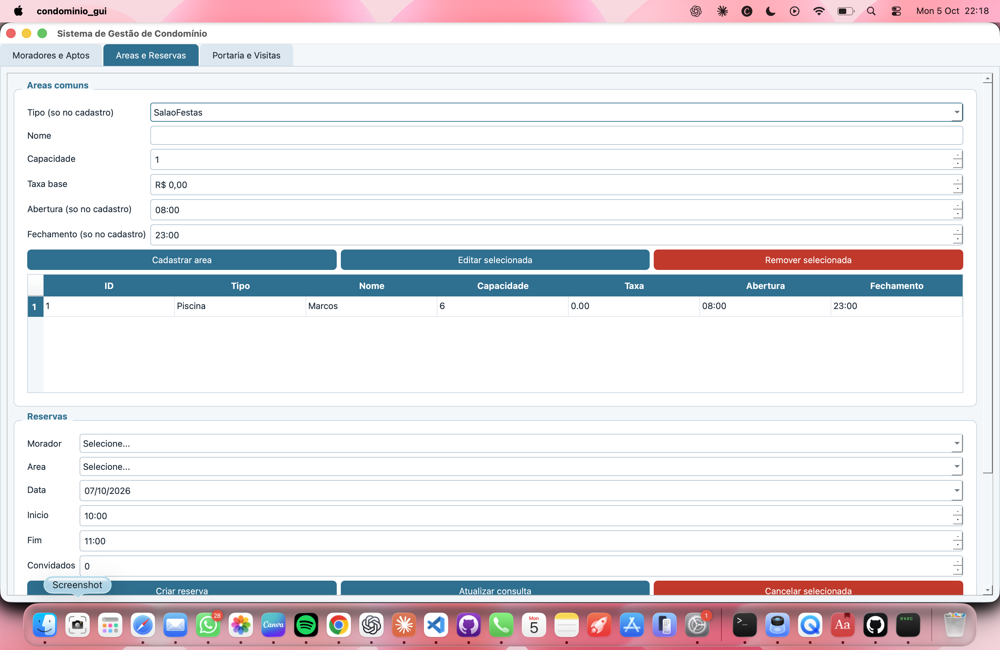
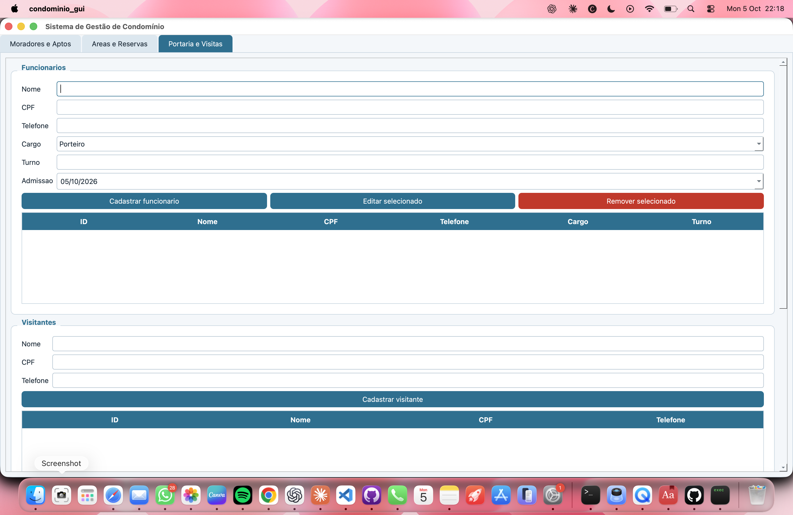
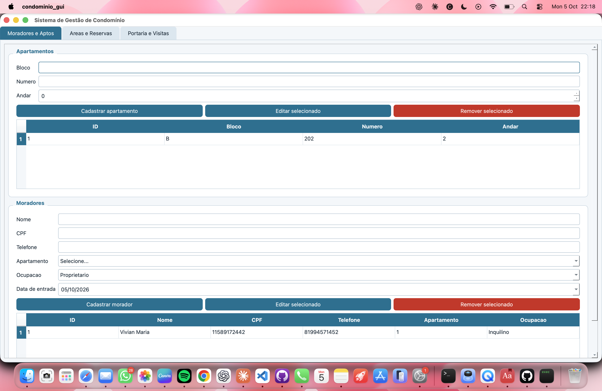

O projeto
Resumo, contexto e objetivos
Resumo: Este trabalho apresenta o desenvolvimento de um Sistema de Gestão de Condomínio, realizado como Projeto Prático da disciplina Estruturas de Dados Orientadas a Objetos (CIN0135), do Centro de Informática da UFPE, sob orientação do professor Francisco Paulo Magalhães Simões. O sistema permite cadastrar e gerenciar apartamentos, moradores, funcionários, visitantes e áreas comuns, além de controlar reservas de espaços e o registro de entrada e saída de visitas.
Contexto: A administração de um condomínio envolve o controle de informações de naturezas distintas, como o cadastro de pessoas, o uso compartilhado de espaços e a segurança de acesso. Sem um sistema organizado, essas informações tendem a ficar dispersas e a gerar conflitos, como reservas simultâneas do mesmo espaço. O projeto propõe uma solução que centraliza esses dados em um banco de dados e aplica regras de negócio para evitar inconsistências.
Abordagem: O sistema foi modelado segundo o paradigma de orientação a objetos e implementado em C++17, com persistência em SQLite e organização em camadas. As entidades do domínio são representadas por hierarquias de classes, e o acesso aos dados é isolado por padrões de projeto, o que facilita a manutenção e a evolução do código.
Objetivos
- Aplicar, em um sistema de informação completo, os conceitos de classes, objetos, herança, polimorfismo, encapsulamento e modificadores de acesso.
- Implementar operações de criação, leitura, atualização e remoção (CRUD) conectadas a um banco de dados relacional.
- Representar regras de negócio reais do domínio condominial, como conflito de horários, capacidade das áreas e restrições de cancelamento.
- Utilizar ponteiros, referências e padrões de projeto (Singleton, Repository e Factory) para estruturar o código.
- Documentar o sistema por meio de diagramas, relatório e vídeo explicativo.
Funcionalidades
Módulos com CRUD completo conectado ao banco de dados
Apartamentos e moradores
Cadastro, edição e remoção de apartamentos e moradores, com vínculo entre ambos.
Áreas comuns e reservas
Salão de festas, piscina e churrasqueira, com validação de horário, capacidade e conflito entre reservas.
Visitantes e visitas
Registro de entrada e saída de visitantes pelo porteiro, com preservação do histórico.
Funcionários
Cadastro e gerenciamento dos funcionários do condomínio e de seus cargos.
Arquitetura
Organização em camadas
| Camada | Responsabilidade |
|---|---|
| Interface | Menus de terminal e telas em Qt |
| Serviço | Regras de negócio e funções do usuário final |
| Repositório | Operações de CRUD, isolando o código SQL |
| Infraestrutura | Conexão com o banco, exceções e fábricas de objetos |
| Modelo | Entidades do domínio usadas por todas as camadas |
Tecnologias utilizadas:
Conceitos de POO aplicados
Onde cada conceito aparece no código
| Conceito | Aplicação no projeto |
|---|---|
| Classes abstratas | Pessoa, AreaComum e a interface IRepositorio |
| Herança | Morador, Visitante e Funcionario herdam de Pessoa; SalaoFestas, Piscina e Churrasqueira herdam de AreaComum |
| Polimorfismo | Cada área comum calcula a taxa e valida reservas à sua maneira (virtual e override) |
| Encapsulamento | Atributos privados com getters e setters que validam os dados |
| Ponteiros e referências | unique_ptr em coleções polimórficas e passagem de parâmetros por const& |
| Padrões de projeto | Singleton (Database), Repository (acesso a dados) e Factory (criação de objetos) |
Equipe
Integrantes do grupo
Vivian Azevedo
Clécio Muniz
Sâmia Freitas
Beatriz Luna
Diagramas
Modelo de classes e modelo de dados


Telas



Vídeo
Funcionamento do sistema e conceitos de POO utilizados
Links
Código-fonte e documentação